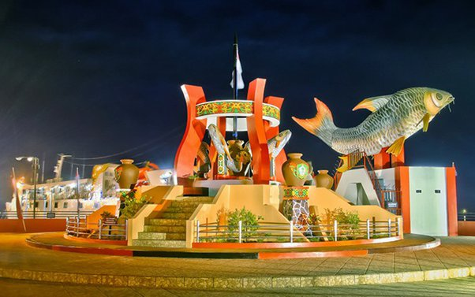

Sejarah
Kota Sampit terletak di tepi Sungai Mentaya. Dalam bahasa Dayak Ot Danum,Sungai Mentaya itu disebut batang danum kupang bulau (Masdipura, 2003).
Asal usul nama Kota Sampit mempunyai 4 versi yaitu:
- Versi I
- Versi II
- Versi III
- Versi IV
Kata “Sampit” berasal dari bahasa Cina yang berarti “31” (sam = 3, it = 1). Disebut 31, karena pada masa itu yang datang ke daerah ini adalah rombongan 31 orang Cina yang kemudian melakukan kontak dagang serta membuka usaha perkebunan. Hasil usaha-usaha perdagangan perkebunan ketika itu adalah rotan, karet dan gambir. Salah satu areal perkebunan karet yang cukup besar saat itu yakni areal dibelakang Golden dan kodim saat ini. (Masdipura 2003)
Pada saat 1795-1802 terjadi peperangan sengit antara Belanda melawan Inggris. Hal ini mengakibatkan terjadi pemindahan pemukiman warga/penduduk ke pedalaman, tepatnya ke Kota Besi. Pemindahan itu tak terlepas dari adanya gangguan para bajak laut terhadap desa-desa di muara Sungai Mentaya. Pada 1836, eskader Belanda akhirnya dapat menghancurkan gerombolan bajak laut pimpinan Koerwadt yang berkekuatan 25 perahu disekitar Teluk Kumai dan Tanjung Putting. Tokoh bajak laut koerwadt akhirnya tewas dan dikuburkan di sekitar Ujung Pandaran. Hingga kini, kuburannya itu dianggap keramat oleh warga setempat.
Setelah merasa aman, pada 1836, penduduk kemudian pindah ke Seranau yang dulunya bernama Benua Usang (sekarang : Mentaya Seberang) dimana para pedagang-pedagang Cina waktu itu juga mulai berdatangan dan menetap disana. Namun sesuai kepercayaan masyarakat Cina, bahwa suatu kota harus dibangun menghadap arah matahari terbit. Sedangkan Seranau menghadap matahari terbenam , yang menurut perhitungan houngsui Cina dianggap kurang baik. Karena itulah , mereka lantas membangun pemukiman baru di seberang Seranau (Sampit sekarang) yang menghadap ke arah matahari terbit.
Kata “Sampit” berasal dari nama orang pertama yang membuka lahan hutan untuk berladang dan mendirikan tempat tinggal pada tahun 1800-an di sekitar Baamang sekarang. Ini dapat dilihat dari sebuah makam keramat di Baamang Tengah yang bertuliskan nama Djungkir bin Sampit. Makam orang yang bernama Sampit itu sendiri dapat ditemui di Desa Basirih, Kecamatan Mentaya Hilir Selatan (Seperti yang diceritakan sendiri oleh Dachri bin Djungkir bin Sampit).
Menurut legenda rakyat setempat yang masih hidup hingga kini, bahwa Sampit pada masa itu berbentuk sebuah kerajaan bernama Kerajaan Sungai Sampit dan diperintah oleh Raja Bungsu. Sang baginda memiliki dua putra masing-masing Lumuh Sampit (laki-laki) dan Lumuh Langgana (perempuan). Diceritakan, Kerajaan Sungai Sampit akhirnya musnah akibat perebutan kekuasaan antara dua saudara kandung tersebut.
Lokasi kerajaan Sungai Sampit ini diperkirakan sekitar perusahaan PT Indo Belambit sekarang (Desa Bagendang Hilir). Beberapa tahun lampau, tiang bendera kapal bekas kerajaan yang terbuat dari kayu ulin besar masih ada dan terkubur lumpur di bawah dermaga PT Indo Belambit tersebut. Bukti-bukti lain yang menguatkan dugaan ini,bahwa di lokasi tersebut pernah pula ditemukan pecahan keramik takala dilakukan penggalian alur parit. Bukti ini kian menguatkan dugaan bahwa di lokasi ini pernah ada Kerajaan Sungai Sampit yang pada masa itu sudah mengadakan kontak dagang dengan bangsa-bangsa luar seperti dari Cina, India bahkan Portugis.
Diperkirakan, Kerajaan sungai Sampit berdiri pada masa kekuasaan Dunasti Ming di Cina (abad ke-13).Hal ini dapat dicermati dari ramainya lalu lintas perdagangan dari Cina yang demikian maju sampai kemudian runtuhnya Dinasti Ming dan merek banyak yang lari kearah selatan (Kalimantan). Diceritakan pula, bahwa Putti Junjung Buih,istri dari Pangeran Suryanata, pernah pula berkunjung ke kerajaan sungai Sampit. Seperti diketahui, Pangeran Suryanata (berkuasa antara 1400-1435) adalah seorang pangeran dari kerajaan Majapahit pada masa pemerintahan Prabu Wirakarrama Wardhana sekitar 1389-1435 (Masdipura; 2003).
Bila ditelisik lebih jauh, Kerajaan Sungai Sampit ini usianya lebih tua dari Negara Dipa (abad ke-14),sehingga di buku Negarakertagama Kerajaan Banjar tidak tertulis. Terbukti pula, kala Putri junjung Buih hendak dikawinkan dengan Pangeran suryanata,40 kerajaan besar dan kecil pada waktu itu bermufakat untuk menyerang Negara Dipa. Namun, mereka dapat ditaklukkan dan sejak itulah kerajaan-kerajaan itu menjadi vazal Kerajaan Banjar. Bukti-bukti ini dapat ditelusuri pada Traktat Karang Intan di mana Sampit sebagai salah satu wilayah yang diserahkan kepada VOC.
Kota Sampit juga pernah disebut-sebut di dalam buku kuno Negarakertagama. Pada masa itu disebutkan, terutama pada masa keemasan Kerajaan majapahit, yang diperintah oleh Raja Hayam Wuruk dengan mahapatihnya yang tersohor yaitu Gajah mada.Di salah satu bagian buku yang ditulis oleh Mpu Prapanca pada 1365 itu disebutkan, bahwa pernah dilakukan ekspedisi perjalanan nusantara di mana salah satu tempat yang mereka singgahi adalah Sampit dan Kuala Pembuang.